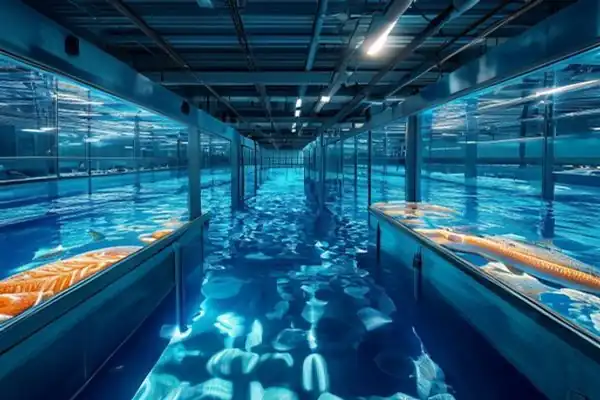
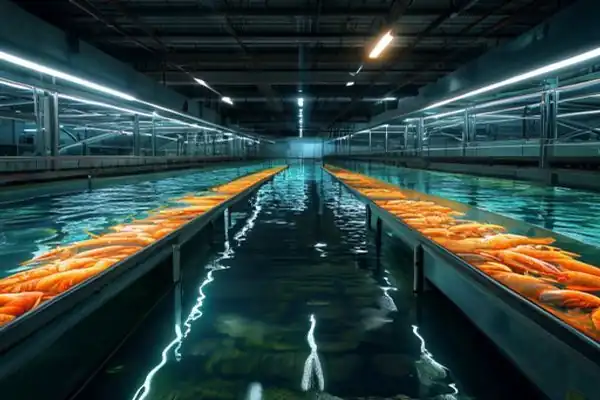
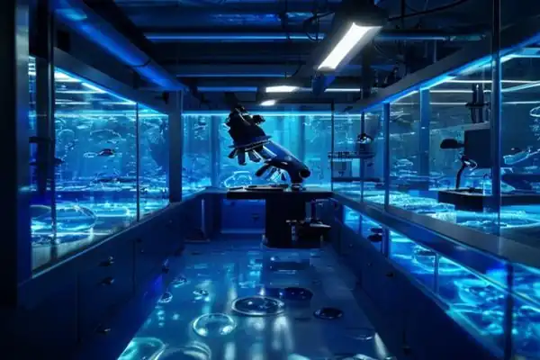
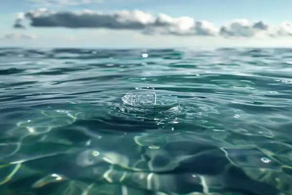
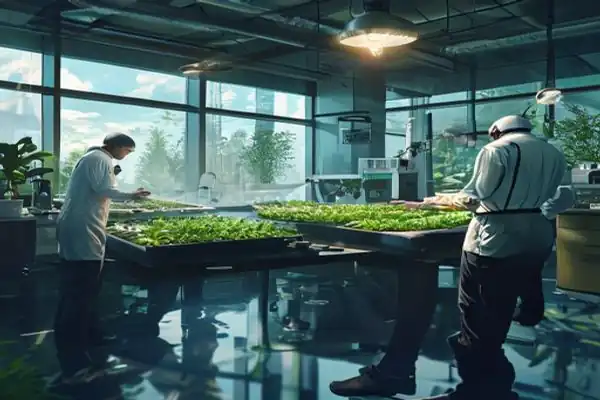

End-to-end solutions for modern, profitable, and sustainable aquaculture. We provide the technology and expertise to scale your operations.

Advanced open-water and land-based Recirculating Aquaculture Systems (RAS) tailored for high-density production of Salmon, Tilapia, and Carp.
Learn More
Specialized biosecure facilities designed for optimal shrimp health, featuring automated salinity control and biofloc technology integration.
Learn More
End-to-end brooding and incubation services. We ensure maximum survival rates from egg to juvenile stages through precise environmental controls.
Learn More
24/7 automated analysis of Dissolved Oxygen, pH, Ammonia, and Temperature using state-of-the-art IoT sensors tied to your Stackly Dashboard.
Learn More
Expert guidance from marine biologists and engineers on farm design, species selection, disease prevention, and environmental compliance.
Learn MoreAI-powered automated feeding systems, underwater drone inspections, and predictive yield forecasting to completely digitize your farm.
Learn MoreOur team of experts can audit your current facilities and provide a custom technology roadmap.
Request a Consultation